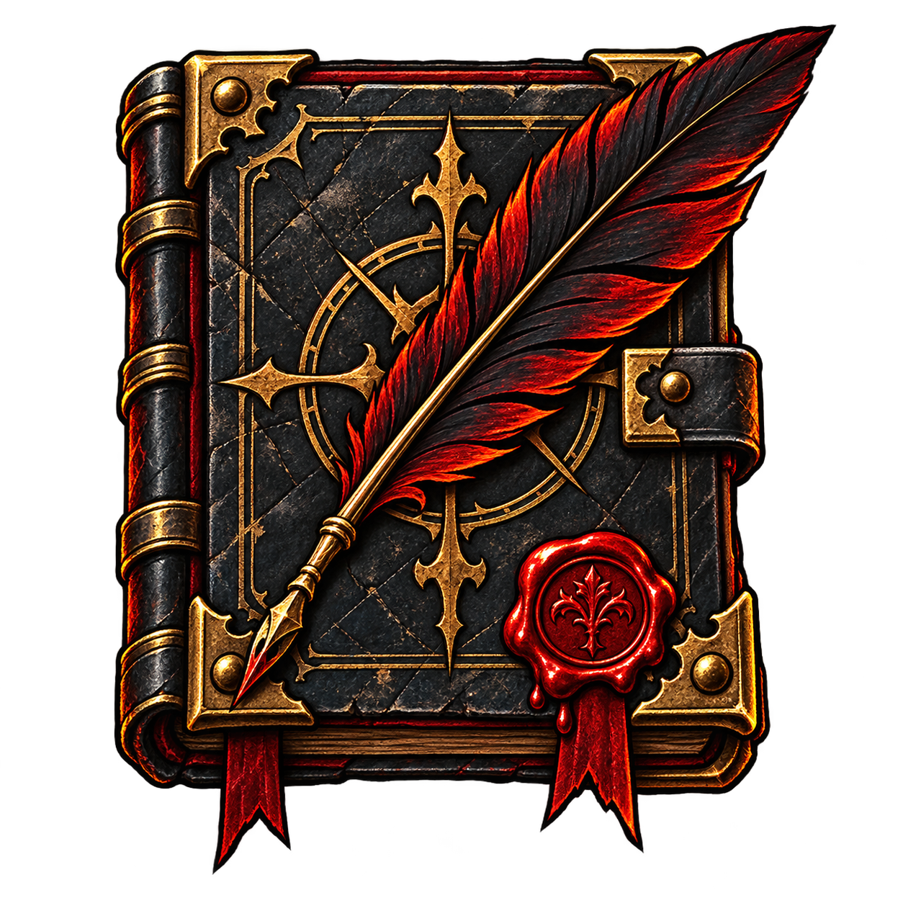

Items and trinkets
Adjust town resources, inventory items and trinket quantities, with previews based on the current save and content rules.

DD SAVE EDITORYour estate. Your next expedition.
Make your preparations count.
Manage items and trinkets, create hero candidates, and adjust battle maps. Edit your local saves with clear previews and backups.
Windows 10/11 x64 English / 简体中文 GPL-3.0-or-later
Read and edit Darkest Dungeon saves on your PC.
Confirm changes, then back up and write your save.
Use the content actually enabled in your profile.
Make changes in the context of your real save and its active content.
Full features and limitationsAdjust town resources, inventory items and trinket quantities, with previews based on the current save and content rules.
Create hero candidates. Choose levels, skins and quirks, and review their equipment and unlocked skills.
Inspect expedition maps and edit supported rooms, corridors and encounters. Story maps and scripted encounters have limitations.
Read the content enabled in your profile. An optional MO2 compatibility package is available; follow the matching release instructions.
Get the Windows x64 ZIP from GitHub. Extract every file, then run DarkestDungeonSaveEditor.App.exe.
Close the game and keep an independent backup. Select your game paths and the intended profile, then load the save.
Review the target and the proposed changes. When you apply them, the editor backs up the save before writing.
Current releases are prereleases. Windows packages include the .NET runtime; normal use needs no Java. Keep all extracted files together.